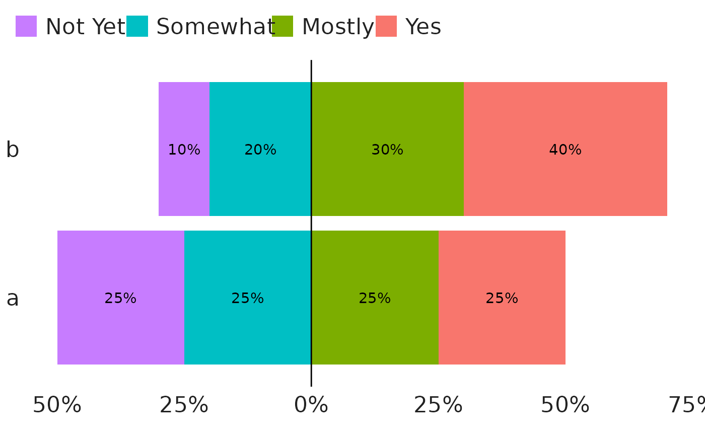

This is a modification of ggplot2::position_stack() for creating diverging
bar charts. In order to use this function, you must set a fill aesthetic
(and that aesthetic should probably be a factor). This function will
automatically break your chart into negative and positive values and display
them in the same order as your fill levels.
Arguments
- vjust
Vertical adjustment for geoms that have a position (like text or points), not a dimension (like bars or areas). Set to 0 to align with the bottom, 0.5 for the middle, and 1 (the default) for the top.
- break_after
Either an integer index or character value that represents the last positive level. The default,
NULL, will split the levels halfway (with fewer positive levels if the total number of levels is odd).- fill
If
TRUEwill automatically scale bars to 100% as withposition_fill()- reverse
If
TRUE, will reverse the default stacking order.
Examples
library(ggplot2)
# Example data
test_df <- tibble::tribble(
~q, ~response, ~prop,
'a', 'Yes', 0.25,
'a', 'Mostly', 0.25,
'a', 'Somewhat', 0.25,
'a', 'Not Yet', 0.25,
'b', 'Yes', 0.4,
'b', 'Mostly', 0.3,
'b', 'Somewhat', 0.2,
'b', 'Not Yet', 0.1
) |>
dplyr::mutate(
response = forcats::fct_inorder(response),
q = forcats::fct_inorder(q)
)
# Default diverging with text
# In interactive use, this can also be run with `position = "diverge"`
test_df |>
ggplot(aes(prop, q, fill = response)) +
geom_col(position = position_diverge()) +
geom_text(aes(label = scales::percent(prop,)),
position = position_diverge(vjust = 0.5)) +
geom_vline(xintercept = 0) +
tntp_style(family = "sans") +
# Reverse legend to match horizontal bar order
guides(fill = guide_legend(reverse = TRUE)) +
# Adjust axis labels to be positive on both sides
scale_x_continuous(labels = ~scales::percent(abs(.)))

# Custom breaks with the break_after parameter
test_df |>
ggplot(aes(q, prop, fill = response)) +
geom_col(position = position_diverge(break_after = 'Yes')) +
geom_hline(yintercept = 0) +
tntp_style(family = "sans") +
# Adjust axis labels to be positive on both sides
scale_y_continuous(labels = ~scales::percent(abs(.)))